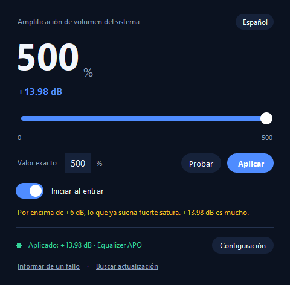

Windows se empeña en que 100 % es el máximo. Se equivoca. Volume Booster PC sube el volumen de todo el sistema hasta el 500 % —o el 1000 % si te empeñas— sin añadir latencia, sin cuenta y sin telemetría.
Descargar gratis Ver el códigoTambién en inglés: README

Porque el límite no está en el deslizador: está en el motor de audio. Windows recorta cada dispositivo al 100 % y ninguna llamada de la API lo cambia. La única forma de superarlo sin ganar latencia es un APO (Audio Processing Object) firmado dentro de la cadena de audio: Equalizer APO. Eso es lo que hace esta aplicación: escribe una línea en su configuración, y además verifica leyendo el motor que el refuerzo se está aplicando de verdad, en lugar de suponerlo.
Deslizador continuo y caja de valor exacto. Tú decides el techo en Configuración.
Aplica al dispositivo de salida completo, no solo a los auriculares.
No captura, ni almacena, ni reproduce audio: el APO aplica la ganancia en la ruta que ya existe.
Lee las clases COM de cada salida, así que «aplicado» nunca significa «escribí un fichero y esperé».
Un botón reproduce un tono corto al nivel actual, y el deslizador suena mientras lo mueves.
Un único ejecutable portable o un instalador por usuario, sin permisos de administrador.
Es software libre con licencia MIT: puedes usarlo, estudiarlo y compartirlo. Lo hice para que nadie tenga que pagar por un deslizador de volumen. No hay versión «Pro», ni suscripción, ni recopilación de datos.
Dos cosas, por si acaso: no lo vendas ni montes un producto de pago con él, y si lo usas en un proyecto, un vídeo o una herramienta, se agradece el crédito a LeGaliza85. Es una petición, no una condición de la licencia: la MIT permite venderlo y no exige crédito, y prefiero decirlo claro a fingir lo contrario.
⚠️ El audio muy alto puede dañar tu oído y tus altavoces. Hasta el 1000 % son +20 dB. Tú decides cuánta ganancia aplicar; el autor no se hace responsable de los daños auditivos, de los equipos dañados ni de ningún otro perjuicio derivado de usar este programa.
Mueve el deslizador hasta 200 y pulsa Aplicar. El 200 % equivale a +6 dB. Si prefieres el valor exacto, escríbelo en la caja.
Solo en Windows, y solo una vez: instalarlo, marcar el dispositivo que quieres amplificar y reiniciar. La aplicación te lleva a la descarga y al selector de dispositivos desde su propia ventana de Configuración.
No por el hecho de amplificar, pero sí puede saturar: por encima de +6 dB, el material que ya está grabado fuerte empieza a recortarse. La app te avisa al pasar de 200 %.
Sí, con PipeWire o PulseAudio, que ya permiten pasar del 100 % de forma nativa. macOS no: exigiría un dispositivo de audio virtual, y eso añade latencia.
No. Gratis, con el código a la vista, sin cuenta ni telemetría. Si alguien te pide dinero por esto, no es esta página.